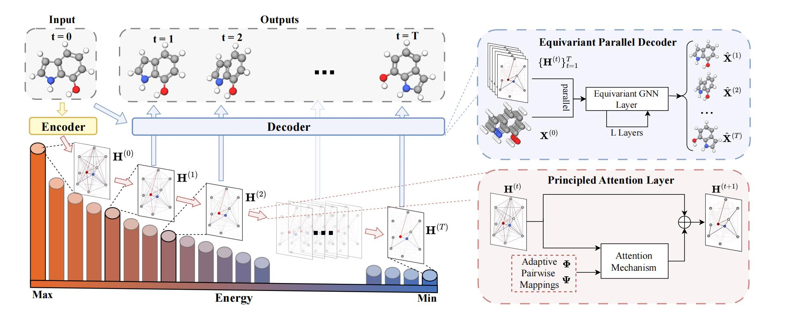
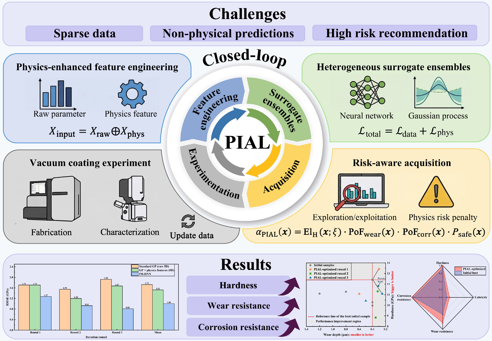
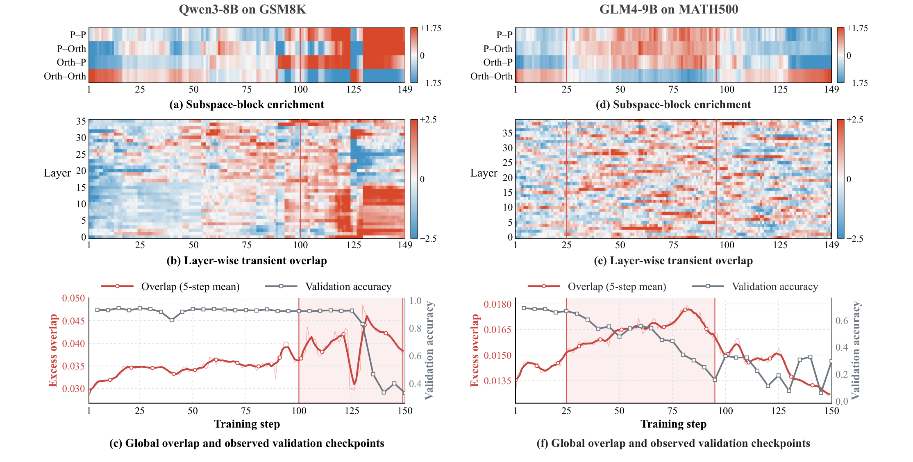
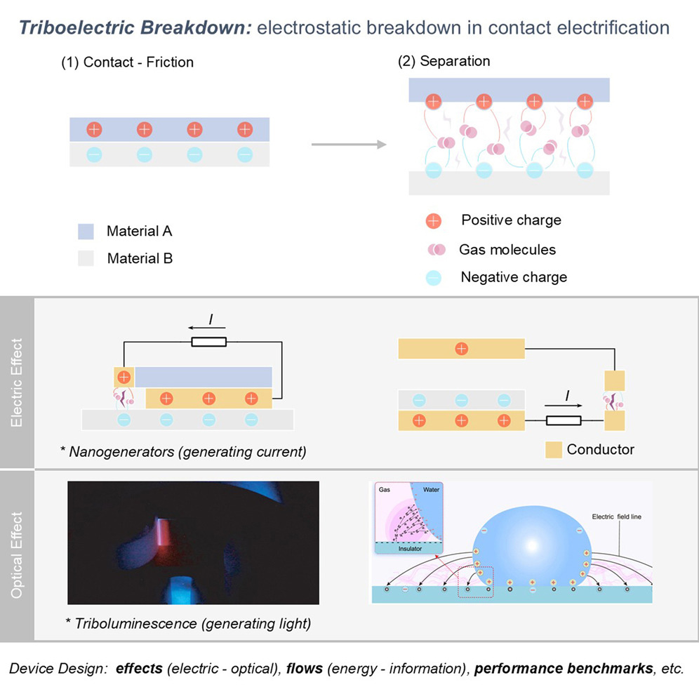
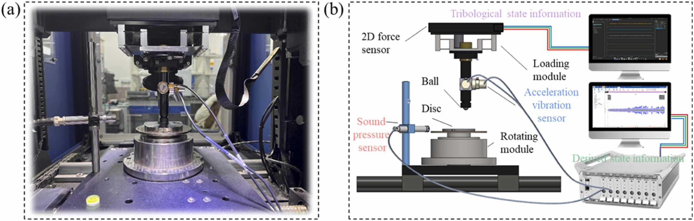
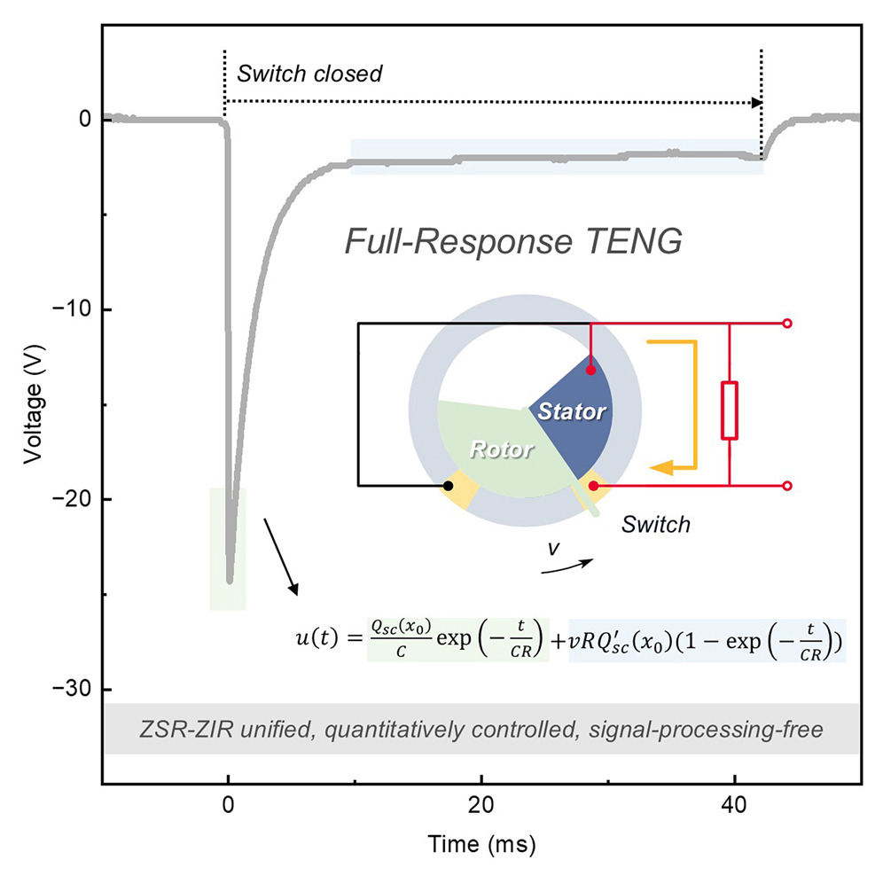
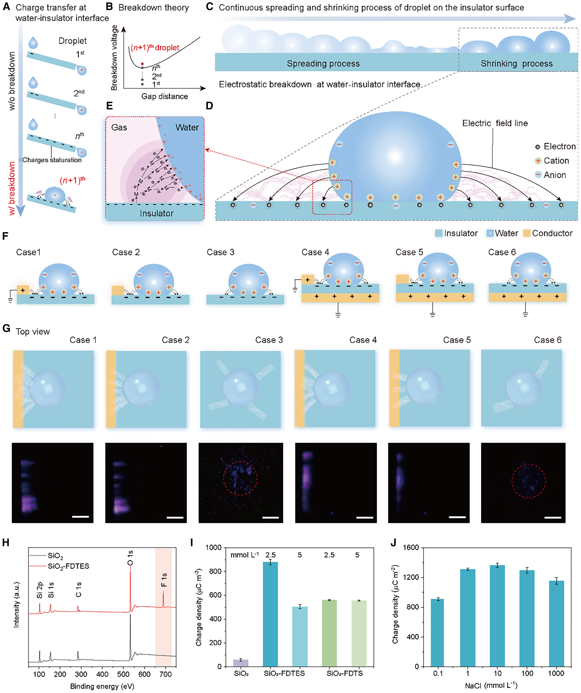
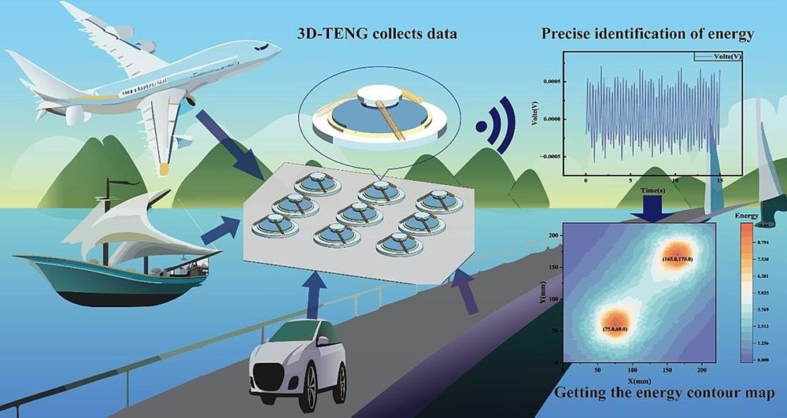

2026

I am a master’s student in Mechanical Engineering at Shanghai Jiao Tong University, advised by Prof. Zhinan Zhang. At Mines Paris – PSL, I am pursuing an MEng in Science and Executive Civil Engineering. I am also a Performance Engineering Intern at NVIDIA’s Performance Lab, working on automated GPU validation and AI-assisted diagnostics.
My research connects multimodal sensing, physics-informed machine learning, and intelligent systems. My interests include:








National Scholarship
Grand Prize (Champion) & Audience Choice AwardChina (International) Sensor Innovation Competition, Haptic Technology and Applications Track
Silver AwardBohrium + SciMaster Research AI Development Competition
Special ScholarshipShanghai Jiao Tong University
Developed a piano-training system that synchronizes wearable hand-motion data with audio and MIDI for real-time posture assessment, error detection, and corrective feedback.
Built a closed-loop active-learning framework for vacuum-coating design with limited experimental data. Physics constraints reduced nonphysical fluctuations in predictions, and risk-aware experiment selection identified coatings with better trade-offs among hardness, wear resistance, and corrosion resistance.
Designed a dual-mode triboelectric sensor and signal-acquisition pipeline. Built a multi-angle, multi-frequency CatBoost predictor and developed an optimization algorithm for spatial energy mapping.